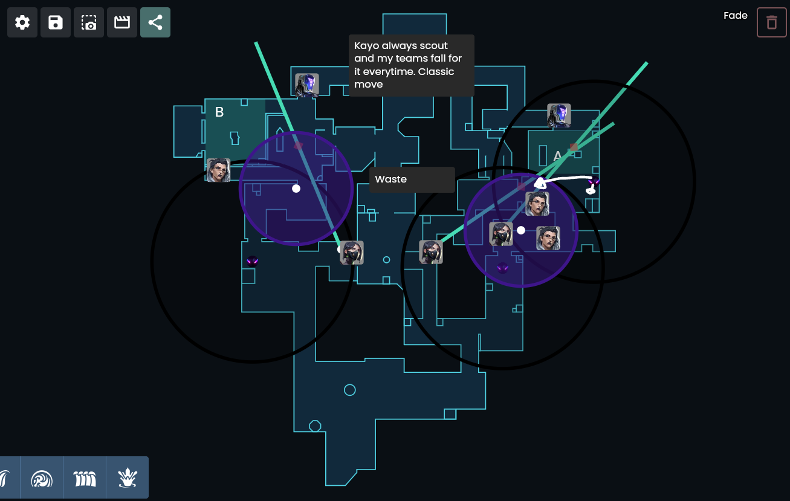
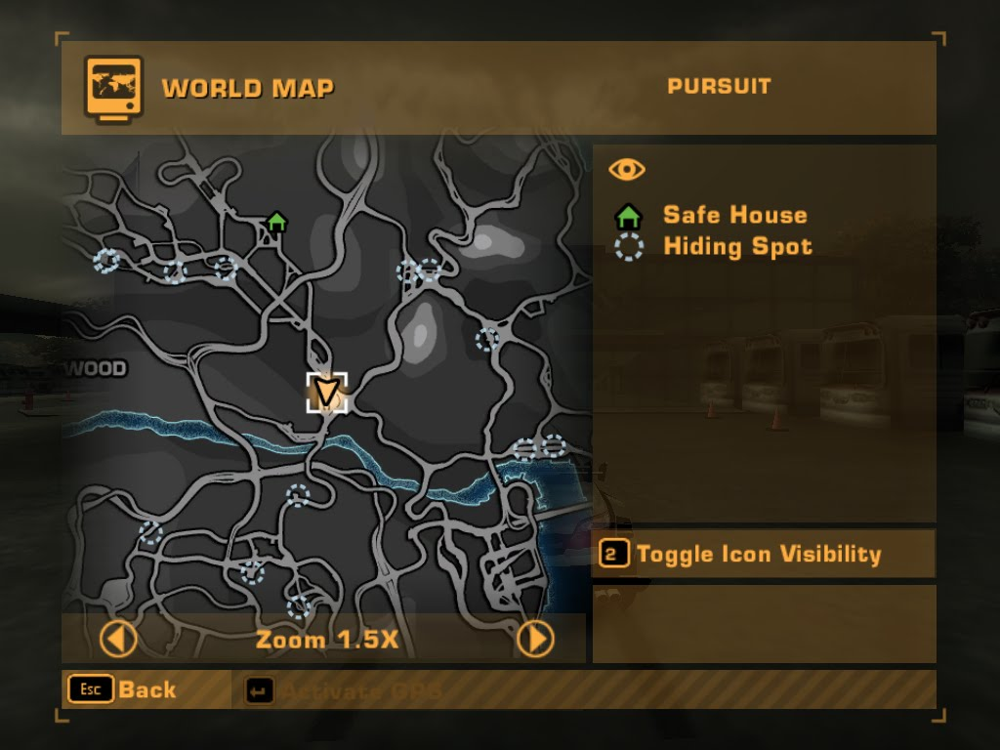

Video games
Intro
Note
Don't forget to read Dan Luu's article about "95%-ile isn't that good" Completely forgot about it, but it's a great read.
"...My experience is that other games are similar and I think that "real life" activities aren't so different, although there are some complications. One complication is that real life activities tend not to have a single, one-dimensional, objective to optimize for. Another is that what makes someone good at a real life activity tends to be poorly understood (by comparison to games and sports) even in relation to a specific, well defined, goal..."
Statements
I'm talking about video games not games, video games are interactive video games. The "video" part is important to remember not only in this post, but for always. It's video games and not games. Not every video game requires the same skillset. If you don't use your brain then it's not going to work for you. (When you use a guide for example) Bold, inaccurate or slightly different statements are you going to read. Since I will modify my own perspectives carefully. Obviously you cannot learn all the finances from a single game or multiple games.
Last
Wording isn't the best.
Subjects
- Finances
- Tactics
- Communications
- Recruitment
- Strategy and tactics
- Analysis
- Information gathering
Finances
I mean "finances" you buy a sniper rifle for 4.7K, you lose operator to the opposite team, the opposite team saves money getting a sniper rifle for you, the member that has your sniper rifle will buy better rifles for his/her teammates. You will think twice about buying your guns.
A better explanation for “economy” is this video by SkillCapped Valorant Tips Tricks and Guides on YouTube:

An example of this is that I know the price of the Huawei Freebuds 5i. they are around €100 in almost every store. I got my set for €50, I'm not going to pay €100 for another set so there are few things you can apply:
- Getting discount
- Employer discount
- Student discount
- Maybe craiglist or marktplaats
- Looking for sellers that sell it for less. (I'm aware of getting scammed.)
- Ordering from other countries
So what I did in this particle example, I looked in other European country for the same earbuds and I found the same earbuds for just around €65. It took some time, I think 15 minutes in total since I was already experienced in searching, I found the new comparison site I'm definetely going to use a lot more. Don't forgot that time = equals money, so the time invested in this was minimal.
As in life you have the same things, I think we can agree that you don't want to pay a lot for you groceries or anything else.
Communication
Several ways of communcating in games:
- Verbally (microphone)
- Text commands (pre made commands that you can select from)
- Text itself (Hit "ENTER" or whatever key to chat in text)
- Non-verbal through actions (Standing close to your allies, dancing, crouching or other moves to)
- Normal commands (Same to text commands also premadem, but a little more verbose and direct. Depends on the game)
Verbally through the microphone, commands (non verbal and messaging. Language barriers, members with no microphones and people that don't respond to comments are a thing. There are non spoken and nonverbal rules out there to get your point across like in real life. For the car culture there abbreviations and slangs for certain like any other industry.
For me personally this is the most difficult subject a lot of people game but can't utilize the same concepts at work. It's hit or a miss with communication which is obvious, but it more difficult for me when people don't had any challenging experiences in their life, in-depth knowledge about $SUBJECT. One of the reasons why all my posts are English instead of Dutch. Much easier to find English speaking people, because well... a lot of people can speak English.
Recruitment
It's funny though, I mean I'm obviosly playing games, but the way how people recruit other people in games is something that stands out from recruitment in work. Obviously I'm generalizing here. The difference in work and games is that the rank is getting reset every season (for a most of the games) which doesn't happen in real life, I have seen that. It's a lot easier to get people who are gold or diamond (reasonable good players) than hire someone, because there are multiple factors in real life that don't apply to games. What you get back for gold or diamond players is that consistency which is far more difficult to get in real life, I mean everyone wants the best people for their company, but there are lot of factors to be perceived as being good and yes I said percieved.
With most of the games, you see what you get and most of the times a diamond player fit your needs, but things are getting different when you're downranked to silver or bronze. Which means that you need to level up. And that doesn't happen that often in real life, my summary is a good example of beating other people that have more experience. Recruitment in games, is efficient and effective compared to recruiting people for work.
I have my own recruitment process for different things in life and most of the times it always begins with a story or kind of an explanation. People that are very shallow in their story aren't a good fit for me and my team.
- Apple vs Windows or Linux arguments
- Which distro do I need to choose? (for somebody that already has plenty enough of experiences)
- No details
- No facts
- Shallow explanations
- A lot experience but for the years in that particlar sector, far too less to call somebody a senior
I have different strategies and tactics to examine and recruit people. These recruitment processes overlap with $SUBJECTS that I don't know, when I need or want advice from someone, those things apply as well. Not going to tell my age, but I've been people consistenly that are better than me and when I look back there are ways a couple of ways why and how I beat these people. Story for another blogpost.
The only tip I can give you is... play games. RTS, E-sports games, anything where you need to judge the subject in order to achieve your goals.
Strategy and tactics
Again in Valorant your goal/strategy is getting a higher ranking, your tactic is winning the game. But how do you achieve this? Several websites and videos are available to help you out and learn from this. And one of the websites is called: Valoplant
You create and strategize lineups for your agent(s) and teammates.
Definition
A Valorant Lineup is an act of launching a Valorant Agent Ability from a specific location, direction, and elevation so that it lands on the precise spot. Mostly, a Valorant lineup is used to prevent spike plant, or to prevent spike diffuse.
And example for the agents that I use:

I think that Valorant and obviously Counter Strike and Overwatch are one of the best video games to develop almost every “skill” I mentioned earlier. If you don’t use your brain you obviously don’t develop it.
There are multiple strategies and tactics in real life that you can utilize, this time around I can't be too specific to tell you the strategies and tactics I use in real life, I think one of the easiest one that comes to my mind is grocery shopping, when it's time I have no idea what to get, until I'm in the grocery store itself so:
- I don't waste time looking for discounts.
- I don't get hit with other "good" deals, because I'm here for the bare minimum
What I mean with "bare minimum" is I can care x amount of grocery with me, getting a six-pack Coke Cola is too much. Of course I can buy a grocery bag, which I'm doing anyway. So back to the grocery store I don't have list, but I've checked fridge before going away and I keep the content into my head, without writing it to a list. Which is better, but not for me, since I'm digital person. So I know what I need, no pressure even when they change the whole store, I think this is the part where experience play a good part of it, since I worked in grovery store myself. Just hit and run is my strategy, be swiftly and go.
Analysis
I think Valorant is the easiest way for me to talk about. You died twice on the same spot, you did examine that when looking back at the performance tab in-game, next game you'll try something else or if you can remember the experience you will try different things and basically experiment with it until you get a positive experience. The same thing can be done in real life.
Everything described earlier can be learned from video games and can be applied carefully in real life.
The best one is obviously riding without Google maps in real life. You learn this in Need For Speed, there's no hand holding getting away from the cops, you have to figure out the route all by yourself and yes I’m able to drive with satellite navigation, the fun thing is… I drive with satellite navigation on, but not for the guidance but something else and it’s for you to figure out why.

Note
Using satelite navigation in my car or anywhere else give me an extra set of eyes to check. Maybe another street to drive through. Or turning on the guide, but going slightly off, so it recalculates another alternative route.
Note
Opinion: “but if you cheat or use guides in game, you don't learn anything from games and aren't as challenging as normally. So I did a game called Diablo 3 with whatever the expansion thing was I got invited by someone to play the game and she asked “Don’t use you Icy Veins and I was like flabbergasted that this existed, because I don’t play games with guides and after I got through all those levels it was so boring, so I never touched it again. There’s of course more to it, but you get the gist.”
Information gathering
So gathering information in Valorant (and there are probably better games that can illustrate this more carefully) so in this instance when you’re beginning the round, you first and probably want to know the enemies location. In order to do that you need to gather information. For example through the agent Fade. Throws her ability to mark enemies and basically spot those enemies in their location on the map.
You’re probably looking for a restaurant that makes the best Tagliatelle al Manzo in town. So you decide to use… a phone and probably Google Maps to gather information. Sounds easy right… Until the restaurant doesn’t exist on Google Maps, the question is… what are you going to do when you want that particular meal. Gathering information.
Note
Did you notice the theme that’s going on? If you don’t play games or haven’t played in a long time, this theme is from Need For Speed Heat.
Video games can help to be better at things in real life, but it takes time, brainpower and skills in order to utilize all the subjects in the real world. This is gaming for me and actually the reason why I did go back to gaming after a few years off. It's a virtal enviroment where you can experiment and leverage the knowledge into the real world without getting "punished".
I've beaten people that are incredible on paper, but in real life weren't anything ranging from football, snowboarding, basketball and I.T. And I said this again, the aforementioned concepts are one the reasons why I play and choose a particular game, if I game can't force me to learn to utilize the concepts mentioned above, than it's a waste in my eyes.
Thank you for reading.
Done